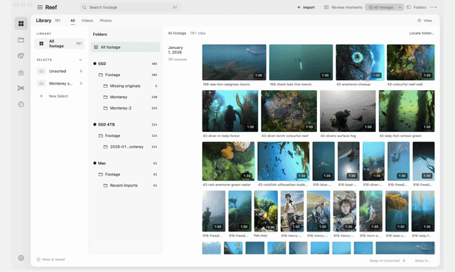

REEF · NATIVE MAC EDITOR
Find the moment. Build the cut. Keep shaping it.

THE PROBLEM
A good moment underwater is a few seconds inside a much longer clip.
Finding it is only the beginning. I wanted one place where search, the edit and an assistant all work on the same saved project, so a proposed edit becomes something I can inspect, change, save and reopen.
ENGINEERING DECISIONS
Four calls that shaped it
01
Keep source ranges explicit
Selected moments keep their source identity and timing through edits, so you can always inspect the real footage behind a choice.
02
Protect newer edits
Revision-aware operations reject stale writes when the project changed since a tool read it. The agent can't overwrite me.
03
Separate source and timeline time
Trims and speed changes move where words and media belong, so captions and audio follow a real mapping.
04
Connect output to an edit
Delivery records tie every render to the exact cut state it came from.
WHERE IT'S GOING